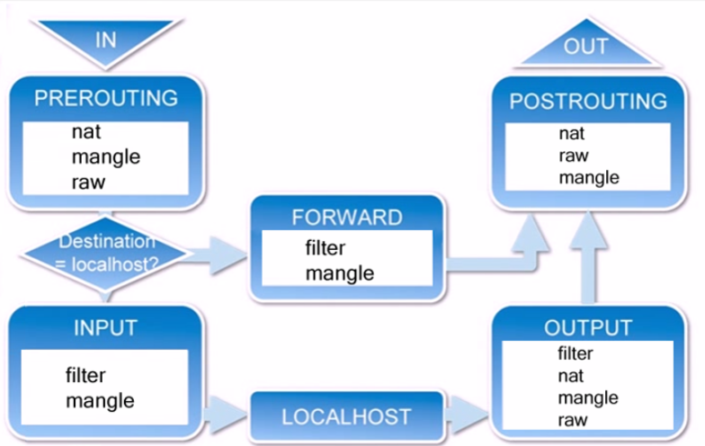

1.防火墙
隔离内部网络和外部网络的隔离技术。
2.防火墙类型
主机防火墙：针对单个主机进行防护。
网络防火墙：处于网络入口或边缘，针对网络入口进行防护，服务于防火墙背后的本地局域网。主机防火墙主内，网络防火墙主外。
从物理上讲，防火墙还分硬件防火墙和软件防火墙
硬件防火墙：在硬件级别实现部分防火墙功能，另一部分功能基于软件实现，性能高，成本高。如：思科ASA 华为防火墙 天融信防火墙 等。
软件防火墙：应用软件处理逻辑运行于通用硬件平台之上的防火墙，性能低，成本低。如：iptables firewall（CentOS7独有的）等。
3.Iptables
3.1 简介
netfilter/iptables（简称为iptables）组成Linux平台下的包过滤防火墙，与大多数的Linux软件一样，这个包过滤防火墙是免费的，它可以代替昂贵的商业防火墙解决方案，完成封包过滤、封包重定向和网络地址转换（NAT）等功能。
3.2 iptables基础
规则（rules）其实就是网络管理员预定义的条件，规则一般的定义为“如果数据包头符合这样的条件，就这样处理这个数据包”。规则存储在内核空间的信息 包过滤表中，这些规则分别指定了源地址、目的地址、传输协议（如TCP、UDP、ICMP）和服务类型（如HTTP、FTP和SMTP）等。当数据包与规 则匹配时，iptables就根据规则所定义的方法来处理这些数据包，如放行（accept）、拒绝（reject）和丢弃（drop）等。配置防火墙的主要工作就是添加、修改和删除这些规则。
3.3 iptables和netfilter的关系
iptables只是Linux防火墙的管理工具而已，位于/sbin/iptables。真正实现防火墙功能的是 netfilter，它是Linux内核中实现包过滤的内部结构。
3.4 iptables传输数据包的过程
- 当一个数据包进入网卡时，它首先进入PREROUTING链，内核根据数据包目的IP判断是否需要转送出去。
- 如果数据包就是进入本机的，它就会沿着图向下移动，到达INPUT链。数据包到了INPUT链后，任何进程都会收到它。本机上运行的程序可以发送数据包，这些数据包会经过OUTPUT链，然后到达POSTROUTING链输出。
- 如果数据包是要转发出去的，且内核允许转发，数据包就会如图所示向右移动，经过FORWARD链，然后到达POSTROUTING链输出。

3.5 iptables的规则表和链
表（tables）提供特定的功能，iptables内置了4个表，即filter表、nat表、mangle表和raw表，分别用于实现包过滤，网络地址转换、包重构(修改)和数据跟踪处理。
链（chains）是数据包传播的路径，每一条链其实就是众多规则中的一个检查清单，每一条链中可以有一 条或数条规则。当一个数据包到达一个链时，iptables就会从链中第一条规则开始检查，看该数据包是否满足规则所定义的条件。如果满足，系统就会根据 该条规则所定义的方法处理该数据包；否则iptables将继续检查下一条规则，如果该数据包不符合链中任一条规则，iptables就会根据该链预先定 义的默认策略来处理数据包。

规则表：
1.filter表——三个链：INPUT、FORWARD、OUTPUT 作用：确定是否放行该数据包（过滤） 内核模块：iptables_filter
2.Nat表——三个链：PREROUTING、POSTROUTING、OUTPUT 作用：用于网络地址转换（IP、端口）修改数据包中的源、目标IP地址或端口 内核模块：iptable_nat
3.Mangle表——五个链：PREROUTING、POSTROUTING、INPUT、OUTPUT、FORWARD 作用：修改数据包的服务类型、TTL、并且可以配置路由实现QOS 内核模块：iptable_mangle(别看这个表这么麻烦，咱们设置策略时几乎都不会用到它)
4.Raw表——两个链：OUTPUT、PREROUTING 作用：决定数据包是否被状态跟踪机制处理 内核模块：iptable_raw
规则链：
1.INPUT——进来的数据包应用此规则链中的策略
2.OUTPUT——外出的数据包应用此规则链中的策略
3.FORWARD——转发数据包时应用此规则链中的策略
4.PREROUTING——对数据包作路由选择前应用此链中的规则（所有的数据包进来的时侯都先由这个链处理）
5.POSTROUTING——对数据包作路由选择后应用此链中的规则（所有的数据包出来的时侯都先由这个链处理）
入站顺序:PREROUTING→INPUT
出站顺序:OUTPUT→POSTROUTING
转发顺序:PREROUTING→FORWARD→POSTROUTING
规则表之间的优先顺序：Raw——mangle——nat——filter
规则链之间的优先顺序（分三种情况）：
第一种情况：入站数据流向从外界到达防火墙的数据包，先被PREROUTING规则链处理（是否修改数据包地址等），之后会进行路由选择（判断该数据包应该发往何处），如果数据包的目标主机是防火墙本机（比如说Internet用户访问防火墙主机中的web服务器的数据包），那么内核将其传给INPUT链进行处理（决定是否允许通 过等），通过以后再交给系统上层的应用程序（比如Apache服务器）进行响应。
第二种情况：转发数据流向 来自外界的数据包到达防火墙后，首先被PREROUTING规则链处理，之后会进行路由选择，如果数据包的目标地址是其它外部地址（比如局域网用户通过网 关访问QQ站点的数据包），则内核将其传递给FORWARD链进行处理（是否转发或拦截），然后再交给POSTROUTING规则链（是否修改数据包的地 址等）进行处理。
第三种情况：出站数据流向 防火墙本机向外部地址发送的数据包（比如在防火墙主机中测试公网DNS服务器时），首先被OUTPUT规则链处理，之后进行路由选择，然后传递给POSTROUTING规则链（是否修改数据包的地址等）进行处理。
3.6 Iptables命令
iptables [-t 表名] 命令选项 ［链名］ ［条件匹配］ ［-j 目标动作或跳转］
表名：
filter(default)
nat
mangle
raw
iptables命令的管理控制选项:
-A 在指定链的末尾添加（append）一条新的规则
-D 删除（delete）指定链中的某一条规则，可以按规则序号和内容删除
-I 在指定链中插入（insert）一条新的规则，默认在第一行添加
-R 修改、替换（replace）指定链中的某一条规则，可以按规则序号和内容替换
-L 列出（list）指定链中所有的规则进行查看
-E 重命名用户定义的链，不改变链本身
-F 清空（flush）
-N 新建（new-chain）一条用户自己定义的规则链
-X 删除指定表中用户自定义的规则链（delete-chain）
-P 设置指定链的默认策略（policy）
-Z 将所有表的所有链的字节和数据包计数器清零
-n 使用数字形式（numeric）显示输出结果
-v 查看规则表详细信息（verbose）的信息
-V 查看版本(version)
-h 获取帮助（help）
-s 匹配来源地址IP/MASK，加叹号"!"表示除这个IP外。
-d 匹配目标地址
-i 网卡名称 匹配从这块网卡流入的数据
-o 网卡名称 匹配从这块网卡流出的数据
-p 匹配协议,如tcp,udp,icmp
--dport num 匹配目标端口号
--sport num 匹配来源端口号
目标动作或跳转:
1.ACCEPT 允许数据包通过
2.DROP 直接丢弃数据包，不给任何回应信息
3.REJECT 拒绝数据包通过，必要时会给数据发送端一个响应的信息。
4.LOG在/var/log/messages文件中记录日志信息，然后将数据包传递给下一条规则
常用选项：
1. -A：指定链名
2. -p：指定协议类型
3. -d：指定目标地址
4. –dport：指定目标端口（destination port 目的端口）
5. –sport：指定源端口（source port 源端口）
6. -j：指定动作类型
EXAMPLE：
1.查看本机防火墙filter表的配置
root@cloud-qk3i9b-b89s:~# iptables -L -n
Chain INPUT (policy ACCEPT)//默认的INPUT链动作是允许
target prot opt source destination
Chain FORWARD (policy ACCEPT)
target prot opt source destination
Chain OUTPUT (policy ACCEPT)
target prot opt source destination
2.清空防火墙的filter表
root@cloud-qk3i9b-b89s:~# iptables -F
3.修改默认规则
root@cloud-qk3i9b-b89s:~# iptables -P INPUT DROP
修改filter表的INPUT默认规则为DROP，此时除了表中被标记为ACCEPT的项，其他项都被拒绝，而此时INPUT链中没有任何项，所以我的服务器（SSH远程登录的 tcp port=22）在设置这个后直接挂机，得回到本机重新将规则
4.添加规则INPUT
事先在INPUT链中添加22号端口为ACCEPT动作，可以让修改filter表的INPUT默认规则为DROP后远程环境依然正常运行。
root@cloud-qk3i9b-b89s:~# iptables -A INPUT -p tcp --dport 22 -j ACCEPT//一般input只考虑dport也就是连接本机的端口，而output相反
root@cloud-qk3i9b-b89s:~# iptables -A INPUT -p tcp --sport 22 -j ACCEPT
root@cloud-qk3i9b-b89s:~# iptables -L -n
Chain INPUT (policy ACCEPT)
target prot opt source destination
ACCEPT tcp -- 0.0.0.0/0 0.0.0.0/0 tcp dpt:22
ACCEPT tcp -- 0.0.0.0/0 0.0.0.0/0 tcp spt:22
Chain FORWARD (policy ACCEPT)
target prot opt source destination
Chain OUTPUT (policy ACCEPT)
target prot opt source destination
root@cloud-qk3i9b-b89s:~# iptables -P INPUT DROP
root@cloud-qk3i9b-b89s:~# iptables -L -n
Chain INPUT (policy DROP)
target prot opt source destination
ACCEPT tcp -- 0.0.0.0/0 0.0.0.0/0 tcp dpt:22
ACCEPT tcp -- 0.0.0.0/0 0.0.0.0/0 tcp spt:22
Chain FORWARD (policy ACCEPT)
target prot opt source destination
Chain OUTPUT (policy ACCEPT)
target prot opt source destination
root@cloud-qk3i9b-b89s:~# ls
a.out
如果做了WEB服务器,开启80端口.
[root@tp ~]# iptables -A INPUT -p tcp --dport 80 -j ACCEPT
如果做了邮件服务器,开启25,110端口.
[root@tp ~]# iptables -A INPUT -p tcp --dport 110 -j ACCEPT
[root@tp ~]# iptables -A INPUT -p tcp --dport 25 -j ACCEPT
如果做了FTP服务器,开启21端口
[root@tp ~]# iptables -A INPUT -p tcp --dport 21 -j ACCEPT
[root@tp ~]# iptables -A INPUT -p tcp --dport 20 -j ACCEPT
如果做了DNS服务器,开启53端口
[root@tp ~]# iptables -A INPUT -p tcp --dport 53 -j ACCEPT
5.添加规则OUTPUT
事先在OUTPUT链中添加22号端口为ACCEPT动作，可以让修改filter表的OUTPUT默认规则为DROP后远程环境依然正常运行。
root@cloud-qk3i9b-b89s:~# iptables -A OUTPUT -p tcp --sport 22 -j ACCEPT
root@cloud-qk3i9b-b89s:~# iptables -P OUTPUT DROP
root@cloud-qk3i9b-b89s:~# iptables -L -n
Chain INPUT (policy DROP)
target prot opt source destination
ACCEPT tcp -- 0.0.0.0/0 0.0.0.0/0 tcp dpt:22
ACCEPT tcp -- 0.0.0.0/0 0.0.0.0/0 tcp spt:22
Chain FORWARD (policy ACCEPT)
target prot opt source destination
Chain OUTPUT (policy DROP)
target prot opt source destination
ACCEPT tcp -- 0.0.0.0/0 0.0.0.0/0 tcp spt:22
6.限制某台机器/某个网络的连接
只允许192.168.0.3的机器进行SSH连接
root@cloud-qk3i9b-b89s:~# iptables -A INPUT -s 156.240.104.114 -p tcp --dport 22 -j ACCEPT
允许原地址为156.240.104.114的IP访问本机的22号TCP端口
root@cloud-qk3i9b-b89s:~# iptables -A OUTPUT -d 156.240.104.114 -p tcp --sport 22 -j ACCEPT
允许源端口为TCP 22号端口访问目的地址156.240.104.114
如果要允许,或限制一段IP地址可用 192.168.0.0/24 表示192.168.0.1-255端的所有IP.
7.删除一条规则
root@cloud-qk3i9b-b89s:~# iptables -D INPUT -p tcp --dport 5656 -j ACCEPT
root@cloud-qk3i9b-b89s:~# iptables -D OUTPUT -p tcp --sport 5656 -j ACCEPT
3.7 NAT（Network AddressTranslation网络地址转换）
filter表用于处理目的地址为本机的包以及从本机发送出去的包，而NAT用于处理流经本机的包。
数据包经过NAT表的PREROUTING链，包不进入本机，将会进入filter表的FORWARD链，最后经过NAT表的POSTROUTING链发送出去。NAT 主机的重点就在于链：PREROUTING 与POSTROUTING。 那这两条链重要功能在于修改IP，而这两条链修改的IP又是不一样的，POSTROUTING在修改来源IP，PREROUTING则在修改目标IP 。由于修改的 IP 不一样，所以就称为来源NAT (Source NAT, SNAT) 及目标 NAT (Destination NAT, DNAT)。
SNAT即源地址转换，能够让多个内网用户通过一个外网地址上网，解决了IP资源匮乏的问题。一个无线路由器也就使用此技术。

由上图可知，需要将192.168.10.10转换为111.196.211.212。
iptables命令如下：
iptables –t nat –A POSTROUTING –s 192.168.10.10 –o eth1 –j SNAT --to-source 111.196.221.212
外网IP地址不稳定的情况即可使用MASQUERADE(动态伪装),能够自动的寻找外网地址并改为当前正确的外网IP地址
iptables -t nat -A POSTROUTING -s 192.168.10.0/24 -j MASQUERADE
DNAT即目地地址转换，则能够让外网用户访问局域网内不同的服务器。（相当于SNAT的反向代理）

由上图可知，目标地址192.168.10.6在路由前就转换成61.240.149.149，需在网关上运行iptables命令如下：
iptables –t nat –A PREROUTING –i eth1 –d 61.240.149.149 –p tcp –dport 80 –j DNAT --to-destination 192.168.10.6:80
eth1网口传入，且想要使用 port 80 的服务时，将该封包重新传导到 192.168.1.210:80 的 IP 及 port 上面,可以同时修改 IP 与 port。此为地址映射与端口转换。